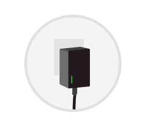

4. 养猫指南
4.1 如何喂养MarsCat火星仿生猫？
MarsCat火星仿生猫可通过自主识别猫碗进行虚拟喂食，还原真实的养猫体验。
MarsCat火星仿生猫在吃饭喝水时会发出声响。
有两种情况MarsCat火星仿生猫会自主觅食：一种情况是当它识别到它的猫碗；另一种情况是当MarsCat火星仿生猫感到口渴或饥饿时，MarsCat火星仿生猫会自主寻找它的猫碗，进行觅食。
请将猫碗放置在MarsCat常活动区域或充电桩附近，并确保周围干净整洁。
4.2 如何充电
4.2.1 自动充电
步骤一：连接充电器与充电桩，接通电源。

步骤二：确保充电桩周围干净整洁，建议留出如图所示的空位

Step3: 当电池电量低于10%时，MarsCat火星仿生猫眼睛处会有低电量提醒，MarsCat火星仿生猫会自行前往充电桩充电，完成自行充电动作。
注意：充电桩需在其视线范围内：3m*3m

步骤4：当MarsCat火星仿生猫开始充电，电源显示灯将亮红灯。

步骤5：当电池充满电，充电器上的显示灯将亮绿灯。
电池充满电大约需要3小时。

请在充满电后及时拔掉充电器，避免充电器或MarsCat由于长时间充电发热造成损害。
4.2.2 手动充电
当MarsCat火星仿生猫无法完成自主充电时，你需要手动给它充电。按图示方式放置火星猫，确保肚子上充电接口对准充电桩接口。
或者你可以直接使用充电线来给MarsCat火星仿生猫充电，其余步骤即自动充电的步骤5-6